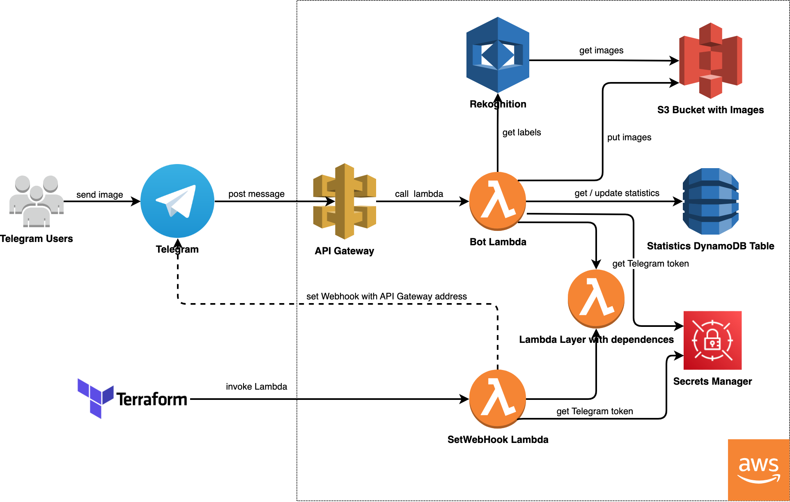
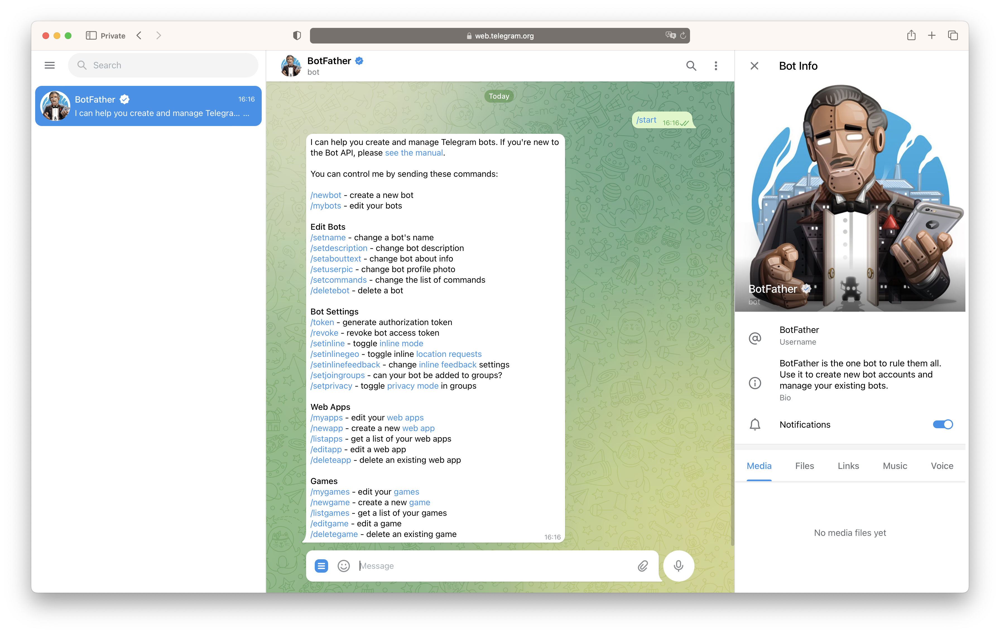
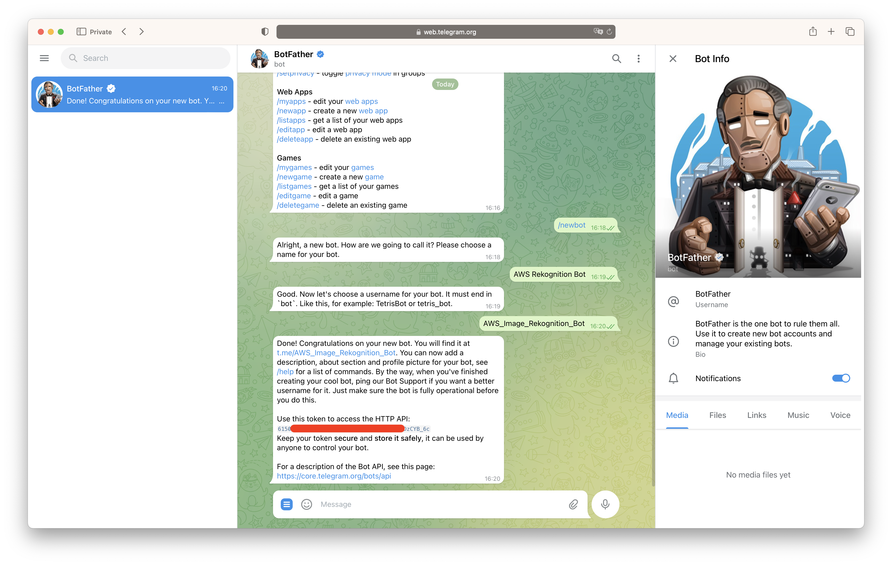
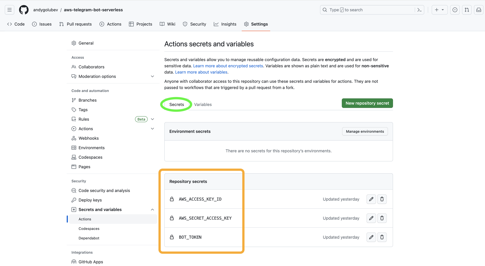
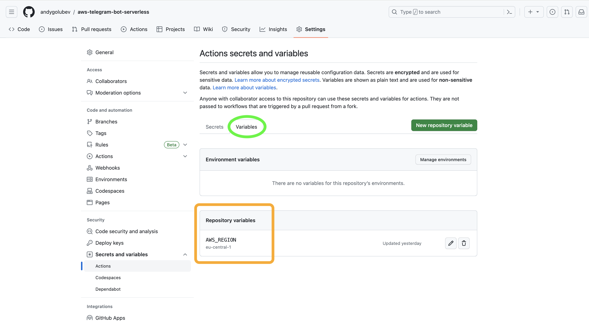
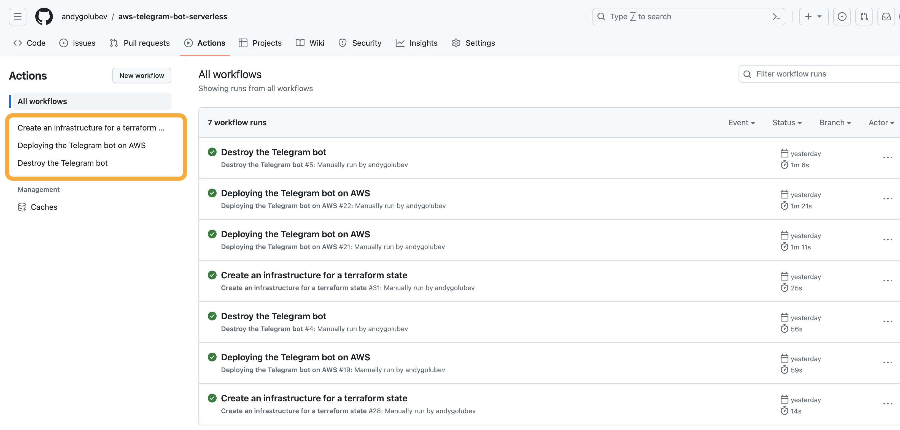

AWS Serverless image recognition Telegram bot using Terraform
Date: 27 June 2023
Introduction
The world of technology is constantly evolving, and with it comes the need for efficient and scalable solutions. Serverless architecture has gained significant popularity due to its ability to handle workloads without the need for infrastructure management. In this article, we will explore the process of building an AWS Serverless image recognition Telegram bot using Terraform.
With a pay-as-you-go pricing model, you only incur costs when functions are executed, ensuring cost effectiveness. Additionally, the availability of the AWS Free Tier means that for small workloads, you pay nothing.
This bot utilizes webhooks from Telegram, enabling it to operate in a reactive manner, responding promptly to specific events. By leveraging webhooks, the bot remains idle until triggered.
Solution diagram
The diagram below illustrates the complete solution, employing a range of AWS services to ensure its seamless functionality.
At the heart of the architecture lies the Lambda function, playing a pivotal role in executing the desired operations. To optimize the efficiency of Lambda deployments and accelerate initialization, Lambda layers are employed. These layers contain all the necessary dependencies, streamlining the deployment process and facilitating faster development iterations.
To ensure the security of sensitive information, such as the BOT Token, I utilize Secrets Manager. This secure vault enables all lambdas to access the token directly, eliminating the need to store it in environment variables.
The storage of user-sent images is facilitated by an S3 bucket. This allows AWS Rekognition access and retrieval of images by simply defining the path to the image within the bucket.
API Gateway acts as a proxy for lambda function calls, providing a seamless communication channel. Beyond its immediate role, API Gateway offers potential future benefits, such as traffic routing and the ability to create development environments for APIs. This versatility positions the product for future scalability and easy integration with evolving requirements.
For simple statistics storage, DynamoDB serves as an effective solution. By leveraging DynamoDB, the solution efficiently stores and retrieves statistical data, ensuring reliable data management without unnecessary complexity.
Lastly, AWS Rekognition is utilized to detect labels on the pictures. While the implementation utilizes the smallest capability of the service due to development time constraints, it serves as a demonstration of its functionality. AWS Rekognition offers powerful image analysis capabilities, which can be further explored and enhanced in future iterations.
Bot functionality
The bot's functionality revolves around three simple entities:
- Text processing
- Image recognition
- Statistics request
Initially, to streamline the implementation, I consolidated these functionalities within a single Lambda function. However, as the logic grows more complex, I am inclined to adopt a modular approach by separating these functionalities into individual Lambda functions.
Bot Setup
Setting up a new bot is a straightforward process that requires just three simple steps, all of which can be accomplished with the help of the BotFather. Let's dive into the process:
Step 1: Request a New Bot
Step 2: Choose a Bot Name
Step 3: Assign an Account Name
Optional Step: Set Bot Avatar Image
You can see it in the screenshots:
 Terraform project
To ensure a smooth and efficient setup process, I employ Terraform, an industry-leading Infrastructure as Code (IaC) tool. With Terraform, I can easily provision the entire infrastructure stack required for the project.
Here is the entire repository:
user@ubuntu:~/aws-telegram-bot-serverless$ tree
.
├── LICENSE
├── lambda
│ ├── bot-dependencies-layer
│ │ └── requirements.txt
│ ├── bot-function
│ │ └── bot.py
│ └── webhook-function
│ └── webhook.py
└── terraform
├── 00-provider.tf
├── 01-roles.tf
├── 02-secrets.tf
├── 03-lambda-layer-with-dependencies.tf
├── 04-lambda-bot.tf
├── 05-lambda-webhook.tf
├── 06-api-gateway.tf
├── 07-bucket-images.tf
├── 08-dynamodb-stats.tf
├── 98-output.tf
├── 99-data.tf
├── create_bucket.sh
├── terraform.tfvars
└── variables.tf
5 directories, 18 files
Let's take a closer look at the comprehensive list of resources provisioned:
user@ubuntu:~/aws-telegram-bot-serverless/terraform$ terraform state list
data.archive_file.lambda-bot-zip-file
data.archive_file.layer-zip-file
data.archive_file.webhook-function-zip-file
data.aws_caller_identity.current-account
data.aws_lambda_invocation.webhook-lambda-invocation
aws_apigatewayv2_api.call-back-api
aws_apigatewayv2_integration.api-gw-to-lambda
aws_apigatewayv2_route.post-callback-route
aws_apigatewayv2_stage.prod
aws_cloudwatch_log_group.call-back-api-gw
aws_cloudwatch_log_group.lambda-log-bot
aws_cloudwatch_log_group.lambda-log-webhook
aws_dynamodb_table.aws-telegram-bot-statistics
aws_iam_policy.custom-policy
aws_iam_role.lambdaRole
aws_iam_role_policy_attachment.custom-policy-attachment
aws_iam_role_policy_attachment.policy-attachment["arn:aws:iam::aws:policy/AWSLambdaExecute"]
aws_iam_role_policy_attachment.policy-attachment["arn:aws:iam::aws:policy/AWSXrayWriteOnlyAccess"]
aws_iam_role_policy_attachment.policy-attachment["arn:aws:iam::aws:policy/AmazonRekognitionReadOnlyAccess"]
aws_iam_role_policy_attachment.policy-attachment["arn:aws:iam::aws:policy/service-role/AmazonS3ObjectLambdaExecutionRolePolicy"]
aws_lambda_function.bot-lambda
aws_lambda_function.webhook-lambda
aws_lambda_layer_version.lambda-layer-for-packages
aws_lambda_permission.api_gw
aws_s3_bucket.images-bucket
aws_s3_bucket_lifecycle_configuration.images-bucket-name-lifecycle_configuration
aws_secretsmanager_secret.bot-token-secret
aws_secretsmanager_secret_version.sversion
null_resource.pip-install
While provisioning my infrastructure using Terraform, I encountered a challenge related to environment dependencies. To ensure the successful execution of my Terraform code, I rely on a local provisioner that involves executing a Python PIP Install command and storing the results in the /tmp folder. In order to address this issue and ensure a consistent setup across environments, I have implemented the following solution on GitHub.
GitHub Actions
To ensure convenience and flexibility, I have designed the bot to be deployable using two different methods: GitHub Action and local setup. This allows you to choose the approach that best suits your preferences and requirements.
To facilitate this deployment flexibility, I have made certain modifications to the Terraform backend section. Since I do not use Terragrunt in this project, I have incorporated a sed command in my pipeline. This allows me to dynamically rewrite the Terraform backend section, specifying the appropriate AWS region. Although it may not be the most elegant solution, it effectively ensures the correct configuration for the backend.
...
jobs:
terraform:
name: 'Deploy the bot on AWS'
runs-on: ubuntu-latest
...
- name: Replace the Region in the Provider section of Terraform
run: sed -i 's/us-east-1/${{ env.AWS_REGION }}/g' $TERRAFORM_PATH/00-provider.tf
- name: Terraform Init
run: terraform -chdir=$TERRAFORM_PATH init
...
I store a few secrets and one variable securely on GitHub. You should do the same if you want to use my code.
 And I provide three workflows that simplify the deployment and management process of the bot:
1 - Create Terraform State Bucket and DynamoDB Table:
This workflow enables the creation of a Terraform state bucket and a DynamoDB table. It's important to note that these objects will not be managed by Terraform itself and will require manual removal when necessary.
2 - Provisioning of Essential Bot Services:
The second workflow automates the provisioning of all the services required by the bot.
3 - Destruction of Managed Infrastructure:
The final workflow focuses on the controlled destruction of the infrastructure managed by Terraform. This process ensures the efficient cleanup of resources when they are no longer needed.
While utilizing Step 1, it is crucial to exercise caution. As S3 buckets have a global namespace, conflicts may arise when selecting bucket names. To mitigate this, it may be necessary to modify bucket names prefix. This ensures uniqueness and prevents naming conflicts within the global S3 namespace.
Demo Time
To provide a clearer understanding of the bot's operation, I present a few screens showcasing its functionality in action.
Image Recognition:


Statistics Request:

If you have a Telegram account, I invite you to try out the bot and explore its capabilities firsthand. I provide this bot until the end of July 2023. Further service is not guaranteed because I don't want to go beyond AWS Free Tier.
Conclusion
The AWS serverless stack offers you a powerful and scalable solution out of the box. This project demonstrates the potential of serverless architectures and highlights the ease of development using Terraform.
I hope you enjoy this article.
You can find all of my code in my GitHub repository: https://github.com/andygolubev/aws-telegram-bot-serverless
You can try this bot yourself: http://t.me/AWS_Image_Rekognition_Bot
Feel free to connect with me on LinkedIn: https://www.linkedin.com/in/andy-golubev/